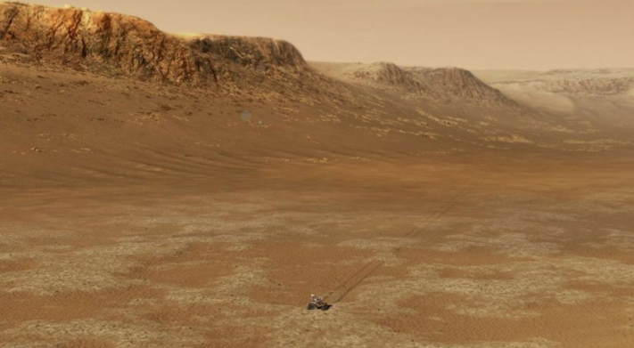

Water-Ice Clouds Could Have Warmed Early Mars
Mars is a cold, desert planet today. But early on, Mars was warmer, with liquid water on its surface. In 1972, Mariner 9 captured images of dried-up river valleys on the planet’s surface, and subsequent spacecraft observed the presence of ancient lakes and river deltas. How Mars could have been warm during a time when the Sun was fainter than today (the “faint young Sun” paradox) has been one of the long-standing questions in planetary science.
In a new study published in the Proceedings of the National Academy of Sciences, Edwin Kite (University of Chicago), and colleagues used a computer model to simulate Mars’s early climate. They found that, under certain conditions, the greenhouse effect of water-ice clouds high in the Martian atmosphere could have warmed the planet for prolonged periods early on.
WATER ICE AS A GREENHOUSE AGENT
When water vapor is transferred directly from surface ice to the atmosphere, a process known as sublimation, the water vapor cools as it rises and forms ice clouds. Present-day Mars has water-ice clouds, but they don’t cause significant greenhouse warming. “Spacecraft-era Mars’s atmosphere is too thin and cold to produce a sufficient abundance of water-ice clouds,” Kite says. “The whole climate system is water starved.”
Early on, however, Mars’s atmosphere was thicker and temperatures warmer, so additional water vapor could have enabled thick water-ice clouds to form at high altitudes. Previous studies have suggested these clouds could have warmed Mars via the greenhouse effect, letting visible light from the Sun through while trapping infrared radiation emitted by the planet. But those studies weren’t able to find a persistent, strong effect.
EARLY MARS CLIMATE: HIGH CLOUDS AND PATCHY ICE
Kite’s team used a computer model to simulate Mars’s climate between 2.9 and 3.7 billion years ago, a period when geological features suggest liquid water was present on the planet’s surface. In these new simulations, the team found that the water-ice cloud greenhouse effect enabled liquid water to persist in lakes for centuries.
For this effect to work, the surface ice had to be patchy. In the model, surface ice was only present at the south polar region and the higher altitudes of Alba Mons, an ancient volcano. As a result, the atmosphere’s humidity remained low, and caused the clouds to form at higher altitudes. “High clouds provide the strongest greenhouse warming,” says Kite.
If surface ice were more extensive (as recently proposed by others), then the humidity would have been higher and the clouds lower, limiting their warming effect. The extent of surface water ice in the distant past remains an open question.
Since water vapor would have stayed in the Martian atmosphere for longer than a year before escaping to space or becoming trapped in the ground, water-ice clouds would have spread across the globe. The extensive, thick, and higher-altitude water-ice clouds would have warmed the surface to above freezing temperatures for many hours each day at all known locations where lakes could have been present . The simulated climate was warm but arid; groundwater flow, infrequent storms, or melting surface ice could have fed the lakes, Kite explains.